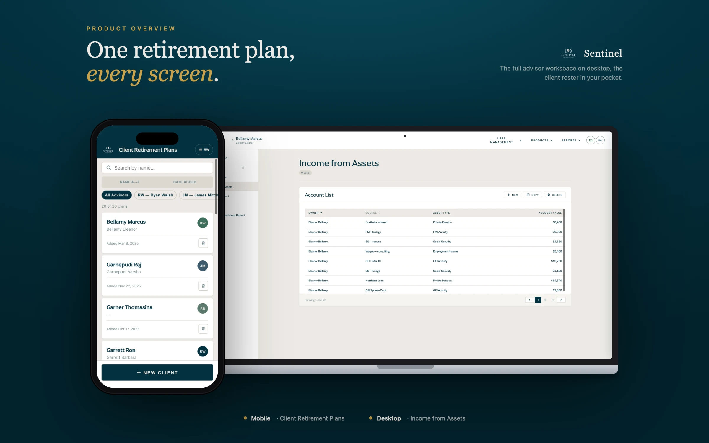
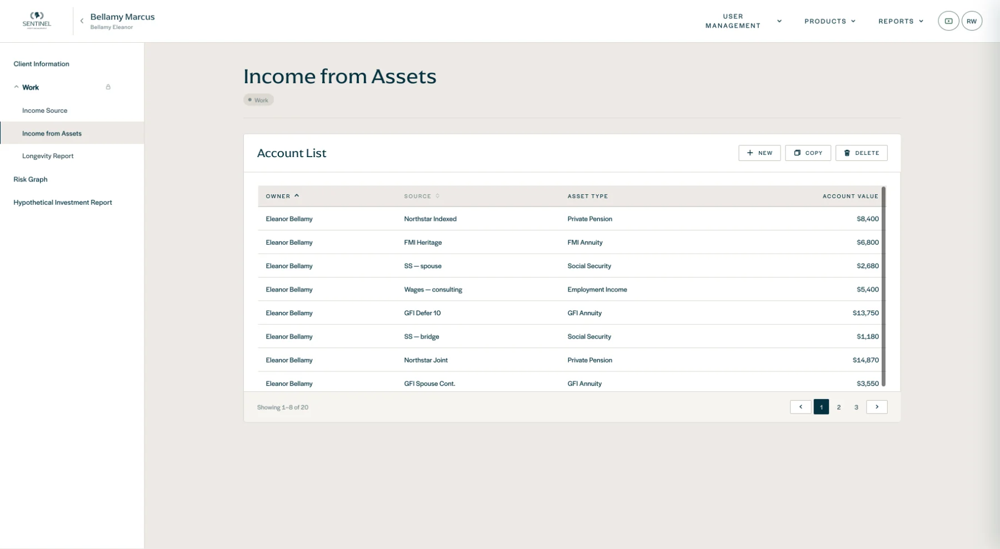
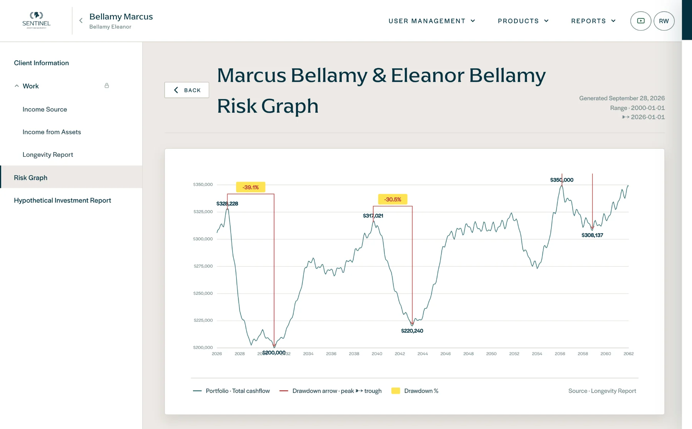
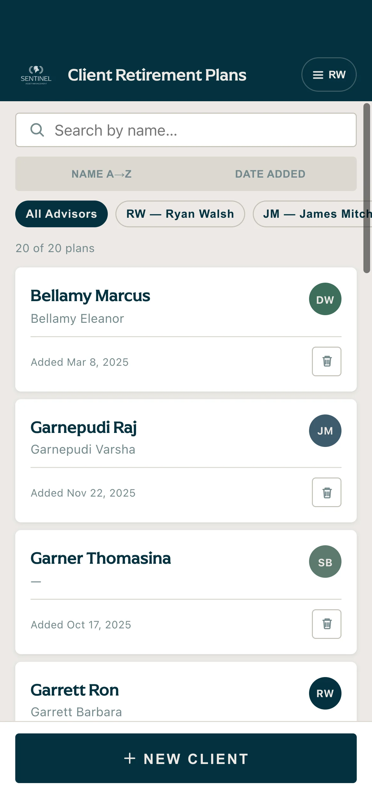

Fintech ⋆ Retirement planning ⋆ Advisor portal ⋆ Report generation ⋆ Desktop & Mobile
Sentinel
Internal retirement-planning and report-generation platform — from client wireframes to a working prototype in 16 hours.
16 hours instead of three weeks.
Prompt like a spec. Refine like a designer.
Wireframes & domain
Client wireframes, retirement-planning research and the reports advisors actually produce.
A multi-page spec
IA, every screen and state, data model, sample households, chart rules and tokens.
Working prototype
Claude Design builds a navigable React app from the spec — not a picture of one.
Designer polish
Screen-by-screen edit prompts plus hands-on fixes to layout, type and charts.
Product Features
A calm, institutional interface for advisors: deep teal on warm neutrals, dense but readable tables, and report-grade charts.
Planning & reports

Account list
Every income source of a household in one sortable table — owner, source, asset type and value — with New, Copy and Delete actions.
The left navigation follows the advisor’s real workflow: client information → work → income → longevity → risk.

Risk Graph
Portfolio cash-flow projection with automatic drawdown markers — peak, trough and percentage loss — ready to share with the client.
Generated date and range are stamped on the report for compliance.
Client plans on the go

Client Retirement Plans
Search, sort and filter plans by advisor, then open a household in one tap.
The same design tokens power desktop and mobile, so both stay consistent.